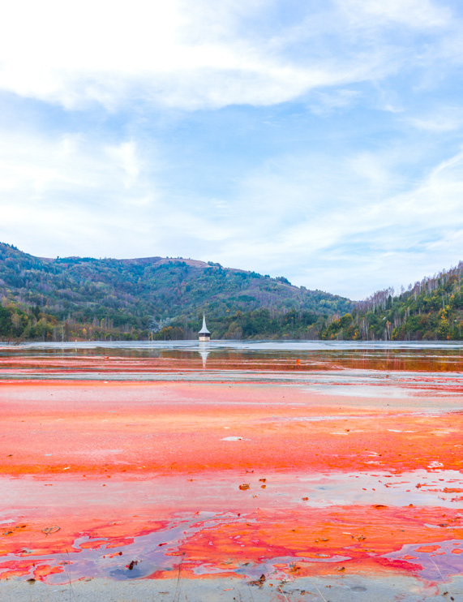

1 VIAJE AL CENTRO DE ANDALUCÍA
INVESTIGAR Y APLICAR
Mapear las minas de Andalucía requiere que domines conceptos como los relativos a las capas de la Tierra, los tipos de rocas y minerales que existen, sus métodos de extracción y su uso y ciclo del agua.
Los saberes básicos que precisáis se encuentran en las unidades didácticas abajo indicadas. Al realizar las actividades propuestas, prestad especial atención a aquellas que aborden el uso de rocas y minerales, el impacto ambiental de las minas y las actividades relacionadas con las aguas subterráneas.
- LA GEOSFERA
- LA ATMÓSFERA Y LA HIDROSFERA
Podéis completar la información necesaria para realizar vuestro mapa minero consultando estas otras fuentes:
- El video Toxic Tour: Rumanía, el lago envenenado, del canal de YouTube ARTE.tv Documentales.
- El artículo Impactos de la minería en el medio hidrológico, de la web ElAgua.
- El video 20 años del desastre de Aznalcóllar, del canal de YouTube de El País.
- Investigad sobre las minas en Andalucía y recoged la información en fichas organizadas en tablas. Podéis buscar información como la concerniente al tipo de mina, su ubicación, si está activa o clausurada y su relevancia en la zona, por ejemplo.
- Dedicar un apartado de vuestras fichas al impacto de las minas sobre los cursos de agua cercanos a ellas.
